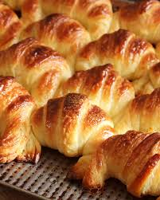

Medialuna
De manteca o grasa
Somos un espacio elegido por los vecinos, donde el aroma a pan recién horneado la atención cercana hacen que cada visita sea especial. En nuestra panadería de barrio elaboramos cada día una gran variedad de productos frescos, hechos con dedicación y las mejores materias primas. Te invitamos a descubrir y a seguir eligiendo nuestros panes, facturas, tortas y especialidades caseras, elaboradas con el sabor de siempre.
De manteca o grasa
Con dulce de membrillo y pastelera.
Molde 26 cm, 12 porciones.
Frances
De queso o saborizados.

consulte variedad disponible.
Somos una panadería artesanal ubicada en General Madariaga. Priorizamos materias primas de calidad y recetas tradicionales. Abrimos de lunes a sábado de 7:30 a 20:00.